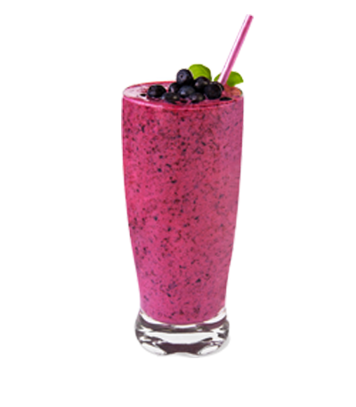
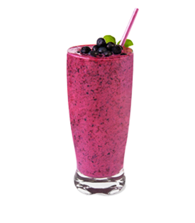

一个健康的生活方式就是个开心的生活方式，那么开心的生活方式包含什么呢？好的食物、好的休息、好的锻炼、最终还有好的果昔啊
做好的果昔可以对身体非常好, 如果您平时赶紧时间、或者平时觉得吃饭很烦恼，喝果昔代餐可以帮你补充身体日常的营养需求!
经常喝果昔可以让你重大地提高你的身体每天吸收的维他命、矿物和纤维素！
接下来本网站提供些果昔照片，每个果昔都适合一天的不同的时间
早餐、午餐和晚饭
一个健康的生活方式就是个开心的生活方式，那么开心的生活方式包含什么呢？好的食物、好的休息、好的锻炼、最终还有好的果昔啊
做好的果昔可以对身体非常好, 如果您平时赶紧时间、或者平时觉得吃饭很烦恼，喝果昔代餐可以帮你补充身体日常的营养需求!
经常喝果昔可以让你重大地提高你的身体每天吸收的维他命、矿物和纤维素！
接下来本网站提供些果昔照片，每个果昔都适合一天的不同的时间
 
